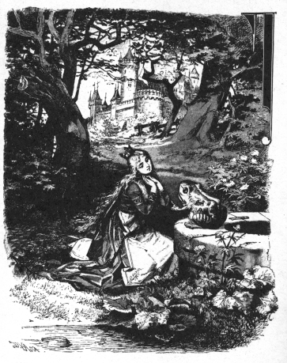

むかしむかし、まだどんな人ののぞみでも、思いどおりにかなったころのことです。
あるところに、ひとりの王さまが住んでいました。この王さまには、お
姫さまがいく人もありましたが、みんなそろって、美しいかたばかりでした。なかでもいちばん下のお姫さまは、それはそれは美しいので、
世のなかのいろんなことをたくさん見て知っているお日さまでさえも、お姫さまの顔をてらすたびに、びっくりしてしまうほどでした。
王さまのお
城の近くに、こんもりとしげった森がありました。森のなかには古いボダイジュが一本立っていて、その木の下から
泉がこんこんとわきでていました。
暑い日には、お姫さまは森のなかにはいっていって、このすずしい泉のほとりにこしをおろしました。そして、たいくつになりますと、
金のまりをとりだして、それを高くほうりあげては、手でうけとめてあそびました。これがお姫さまにとっては、なによりもたのしいあそびだったのです。
ある日、お
姫さまが、いつものように
金のまりをなげあげて、あそんでいるうちに、ついうけそこなってしまいました。まりは
地面におちると、そのまま水のなかへころころところがりこみました。
お姫さまはまりのゆくえをながめていましたが、まりは水のなかにしずんで、見えなくなってしまいました。
泉はとてもとてもふかくて、
底はすこしも見えません。
それで、お姫さまはしくしく
泣きだしましたが、その泣き声はだんだん大きくなりました。お姫さまとしては、あのまりを、どうしてもあきらめることができないのです。こうして、お姫さまが、泣きかなしんでいますと、だれかお姫さまによびかけるものがありました。
「どうなさったんですか、お姫さま。お姫さまがそんなにお泣きになると、石までも、おかわいそうだと泣きますよ。」
お姫さまはびっくりして、声のするほうを見まわしました。すると、そこには、一ぴきのカエルが、きみのわるい、ふくれた頭を水のなかからつきだしています。
「あら、おまえさんだったのね、年よりのカエルさん、いまなにかいったのは。」
と、お姫さまがいいました。
「あたしはね、金のまりが
泉のなかにおちてしまったんで、泣いているのよ。」
「
心配しないで、泣くのはもうおよしなさい。わたしがいいようにしてあげますからね。でも、あなたのまりをひろってきてあげたら、わたしになにをくださいますか。」
と、カエルはいいました。

「大すきなカエルさん、おまえさんのほしいものは、なんでもあげるわ。」
と、お
姫さまはいいました。
「あたしの
着物だって、
真珠だって、
宝石だって。それから、あたしのかぶっている
金のかんむりだって、あげてよ。」
すると、カエルはこたえました。
「着物も、真珠も、宝石も、金のかんむりも、そんなものは、なんにもほしくはありません。そのかわり、もしあなたがわたしをかわいがってくださろうというのなら、わたしをあなたのお友だちにしてください。そうして、あなたの
食卓にならんですわらせてくださって、あなたの
金のおさらで食べ、あなたのかわいいさかずきでのませてください。それから夜になったらば、あなたのちっちゃなベッドにねかせてください。もしこれだけのことを
約束してくださるなら、水のなかにもぐっていって、金のまりをとってきてあげましょう。」
「ええ、ええ、いいわ。」
と、お
姫さまはいいました。
「
金のまりをとってきてくれさえすれば、おまえのおのぞみのことは、なんでも約束してあげるわ。」
でも、心のなかでは、
（おばかさんのカエルね。カエルなんか、水のなかのなかまのそばで、ギャア、ギャア、ないていればいいのよ。人間のお友だちになろうなんて、とんでもないわ。）
と、思っていたのでした。
カエルは、お
姫さまから
約束してもらいますと、頭をひっこめて、水のなかにもぐっていきました。それから、しばらくすると、またうかびあがってきました。見れば、たしかに、
金のまりを口にくわえています。カエルは、そのまりを草のなかにぽんとほうりだしました。
お
姫さまは、じぶんの美しいまりがもどってきたのを見ますと、うれしくってうれしくって、それをひろいあげるなり、そのまま、とんでいってしまいました。
「
待ってください、待ってください。」
と、カエルは大声でさけびました。
「わたしもいっしょにつれてってください。わたしは、そんなにはしれないんです。」
けれども、カエルがうしろのほうから、いくら大きな声で、ギャア、ギャア、ないても、わめいても、なんにもなりませんでした。お姫さまはカエルがさけぶ声には耳もかさず、いそいでお
城へかけていきました。そして、かわいそうなカエルのことなんか、すぐにわすれてしまいました。ですから、カエルのほうは、もとの
泉のなかに、すごすごとかえっていくよりほかはありませんでした。
そのあくる日のことでした。お姫さまが、王さまをはじめ、ご
家来の人たちといっしょに、みんなで
食卓について、
金のおさらでごちそうを食べていますと、なにやら、ピチャ、ピチャ、ピチャ、ピチャ、と、
大理石の
階段をはいあがってくる音がしました。そして、上まであがりきりますと、トントンと戸をたたいて、
「お
姫さま、いちばん下のお姫さま、どうかこの戸をあけてください。」
と、大きな声でいいました。
そこで、お姫さまはかけていって、だれがきたのかしら、と思いながら、戸をあけました。と、おどろいたことに、戸のそとには、きのうのカエルがすわっているではありませんか。それを見るなり、お姫さまはバタンと戸をしめて、いそいで
食卓の
席にもどりました。でも、
胸のなかは
心配で心配でたまりません。王さまは、お姫さまの胸のどきどきしているのを見て、
「
姫や。なにがこわいんだね。戸のそとに
大入道でもきて、おまえをさらっていこうとでもしているのかい。」
と、たずねました。
「あら、ちがうわ。」
と、お姫さまはこたえました。
「大入道なんかじゃないの。いやらしいカエルなのよ。」
「そのカエルが、おまえになんの用があるんだね。」
「それはね、おとうさま、きのう、あたしが森のなかの
泉のそばにすわって、あそんでいたら、
金のまりが水のなかにおちてしまったの。それで、あたしが
泣いていると、カエルがでてきて、まりをとってきてくれたの。そのとき、カエルがあんまりたのむものだから、じゃあ、お友だちにしてあげるわって、
約束しちゃったのよ。だって、まさかカエルが、水のなかからでてこようとは思わなかったんですもの。それがね、いま、あのとおりやってきて、なかへいれてくれっていってるのよ。」
そのとき、また戸をたたく音がして、大きな声がしました。
いちばん下のお姫さま
どうかあけてくださいな
すずしい泉のかたわらで
きのう 約束したことを
あなたはわすれちゃいないでしょう
いちばん下のお姫さま
どうかあけてくださいな
それをききますと、王さまはいいました。
「いちど約束したことは、かならずまもらなければいけないよ。さあ、はやくいって、あけておやり。」
お姫さまは立っていって、戸をあけてやりました。とたんに、カエルはピョンととびこんできて、それからずっとお
姫さまの足もとにくっついて、いすのところまできました。カエルはそこにすわりこんで、
「わたしもそのいすの上にあげてください。」
と、いいました。
ところが、お姫さまは、ぐずぐずしていたものですから、とうとう王さまから、そうしておやり、といわれてしまいました。カエルはいすの上にのせてもらいますと、こんどは、
食卓の上にのせてくれ、といいだしました。そうして、食卓の上にのせてもらいますと、
「その食卓のおさらのものを、ふたりでいっしょに食べられるように、もっとこっちへよこしてください。」
と、いいました。
お
姫さまはそのとおりにしてやりましたが、いやでいやでたまらないようすです。カエルはいかにもおいしそうに食べていましたが、お姫さまのほうは、ひと口ごとに、のどにつかえるような思いでした。カエルは食べるだけ食べてしまいますと、
「ああ、おなかがいっぱいになって、くたびれてしまいました。さあ、わたしをあなたのおへやへつれていってください。そうして、ふたりでねられるように、あなたのかわいらしい
絹のベッドをきちんとなおしてください。」
と、いいました。
とうとうお
姫さまは
泣きだしてしまいました。むりもありません。さわるのさえきみのわるい、つめたいカエルが、こんどは、じぶんのきれいなベッドのなかにねたいなんていうんですもの。お姫さまはすっかりこわくなってしまったのです。けれども、王さまはおこって、こういいました。
「こまっているときに、たすけてくれたものを、あとになって知らん顔するのは、いけないよ。」
そこで、お姫さまは、しかたなしに、カエルを二本の指でつまんで、二
階のおへやにつれていって、すみっこにおきました。そうして、お姫さまがベッドのなかに横になりますと、またもやカエルがはいだしてきて、
「ああ、くたびれました。わたしも、あなたのように、らくにねたいですよ。さあ、わたしをそこにあげてください。もし、そうしてくださらないと、おとうさまにいいつけますよ。」
と、いいました。
それをきくと、お
姫さまはほんとうにおこってしまいました。そして、いきなりカエルをつかみあげると、ありったけの力をこめて、
壁にたたきつけました。
「これで、らくにねむれるわよ。ほんとに、いやらしいカエルだこと。」
ところが、どうでしょう。カエルが下におちたときには、もうカエルではなくなって、美しい、やさしい目をした
王子にかわっていました。
王子は、お姫さまのおとうさまのはからいで、お姫さまのなかよしになり、おむこさまになりました。
そこで、
王子は、じぶんの
身の
上話をしました。その話によりますと、王子は、あるわるい
魔女のために、
魔法をかけられていたのですが、それをあの
泉からすくいだしてくれたのはお
姫さまだけだったということでした。そして王子は、
「あしたは、ふたりでぼくの国へいきましょう。」
と、いいました。
その
晩は、ふたりともゆっくりやすみました。
あくる朝、お日さまがふたりをおこすころ、八
頭だての白い馬にひかれた、一台の
馬車がやってきました。どの馬も、頭に白いダチョウの
羽をつけて、
金のくさりでつながれていました。そして馬車のうしろには、わかい王さまの
家来が立っていました。それは
忠義者のハインリッヒでした。
この忠義者のハインリッヒは、ご
主人がカエルにされたとき、それはそれはかなしみました。そしてそのかなしみのあまり、じぶんの
胸がはれつしてしまわないようにと、
鉄の
輪を三本、胸にはめたのでした。
ところで、この馬車は、わかい王さまを国へおつれする、おむかえの車だったのです。
忠義者のハインリッヒは、おふたりを馬車にのせてから、じぶんはまたうしろにのりました。そして、ご主人のたすかったことを、心のそこからよろこんでいました。
馬車がしばらく走っていきますと、わかい王さまのうしろのほうで、なにかパチンとわれるような音がしました。そこで、わかい王さまがうしろをふりかえって、大声にいいました。
ハインリッヒ 馬車がこわれるぞ――
いえ いえ お殿さま
馬車ではございません
あれはせっしゃの胸輪です
殿さまがカエルになったとき
泉にしずんでいかれたとき
かなしみなげいて
はめた せっしゃの胸輪です
けれども、もういちど、またもういちど、パチンという音がしました。そのたびに、わかい王さまは、馬車がこわれるのではないかと思いました。でもそれは、やっぱり、
忠義者のハインリッヒの胸からとびちる
胸輪の音でした。それというのも、だいじなご
主人がたすかって、これからしあわせなまい日をおくられることになったからですよ。